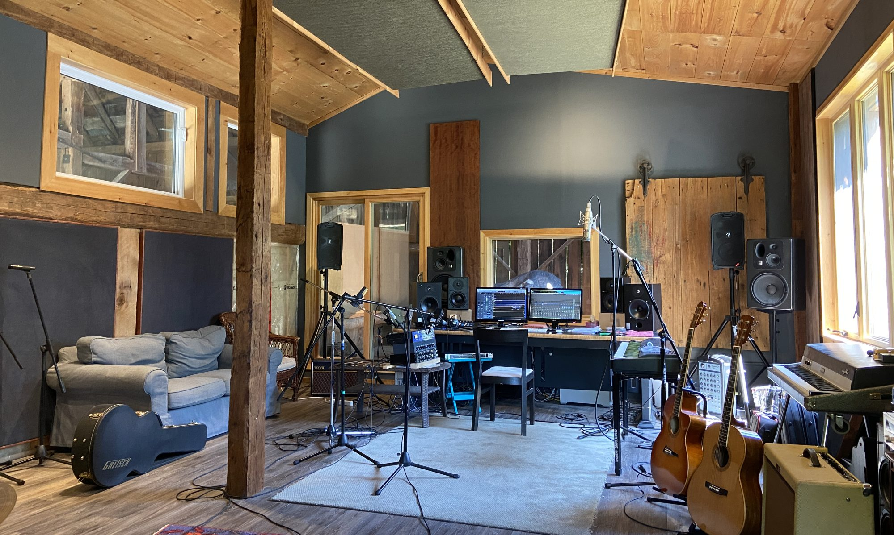
Russell Walker
COMPOSER | SONGWRITER
PROJECTS | MUSIC
The Waupoos Barn Incident

BACKGROUND
The Waupoos Barn Incident is a Canadian band led by Russell Walker and Neil Chapman both known for their long history of musical projects in Toronto including New Regime and The Pukka Orchestra in the 80’s. The pair have written close to 100 film/TV scores together. See their latest video Horror Show: Elon and the Dictator, which addresses contemporary issues including the ‘Horror Show’ south of the Canadian border. Visit them on all streaming platforms.
CREDITS
Musicians implicated in The Waupoos Barn Incident may include Steve Heathcote: drums, Gary Craig: drums, Matt Horner: hammond and piano, Dennis Keldie: hammond, Tony Duggan-Smith: guitar, Leo Valvasorri: bass, Sandrine Charrier/Lee Whalen/Noah Walker: background vocals.

RUSSELL WALKER
COMPOSER | SONGWRITER
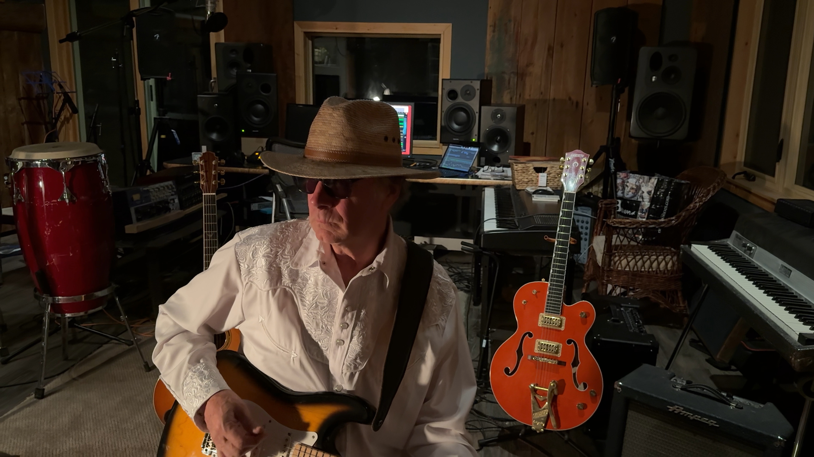
Russ started his road to a career in music studying guitar and classical flute in the early 70’s. He worked as a recording engineer in the late 70’s, making records for bands, and gradually started writing music as well as doing audio post for tv/film.
Russ also played guitar and keyboards in several bands including New Regime, who were signed to RCA Records in 1985. Russ studied harmony and composition at the Royal Conservatory from 1999-2001.
From 1994 to 2014 he owned and operated Kitchen Sync Digital Audio, a post production facility for TV and Film. His facility was one of the first in Canada to go completely tapeless. Russ worked as sound supervisor or sound editor on many award-winning documentary films and drama series including Cracked, The Border, Shake Hands With the Devil, Genius Within: The Inner Life of Glenn Gould, Turning Points in History, Outlaw Bikers, The Nature of Things, and Sugar Coated.
Most recently wrote the music for Paul Saltzman’s ‘Meeting The Beatles In India’ exec produced by David Lynch and featuring narration by Morgan Freeman.
Currently recording and releasing songs with Neil Chapman and The Waupoos Barn Incident.
IMDBGALLERY
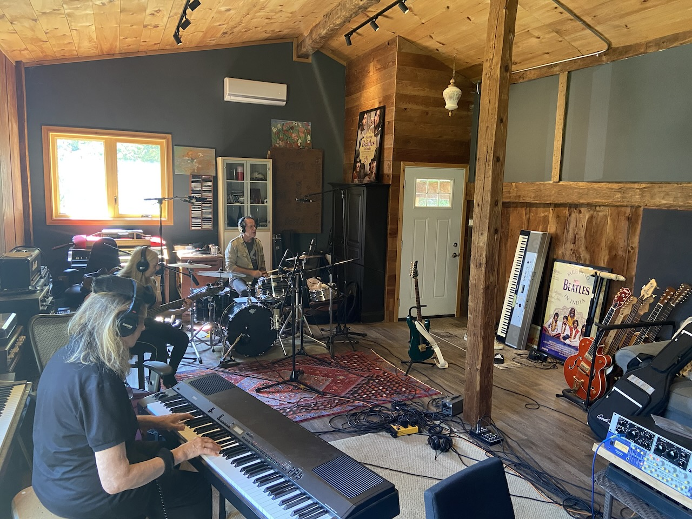
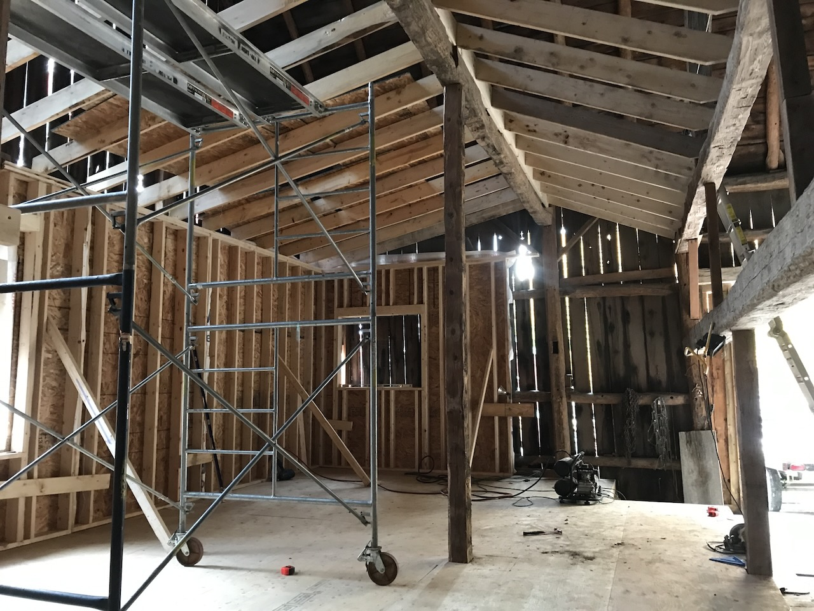
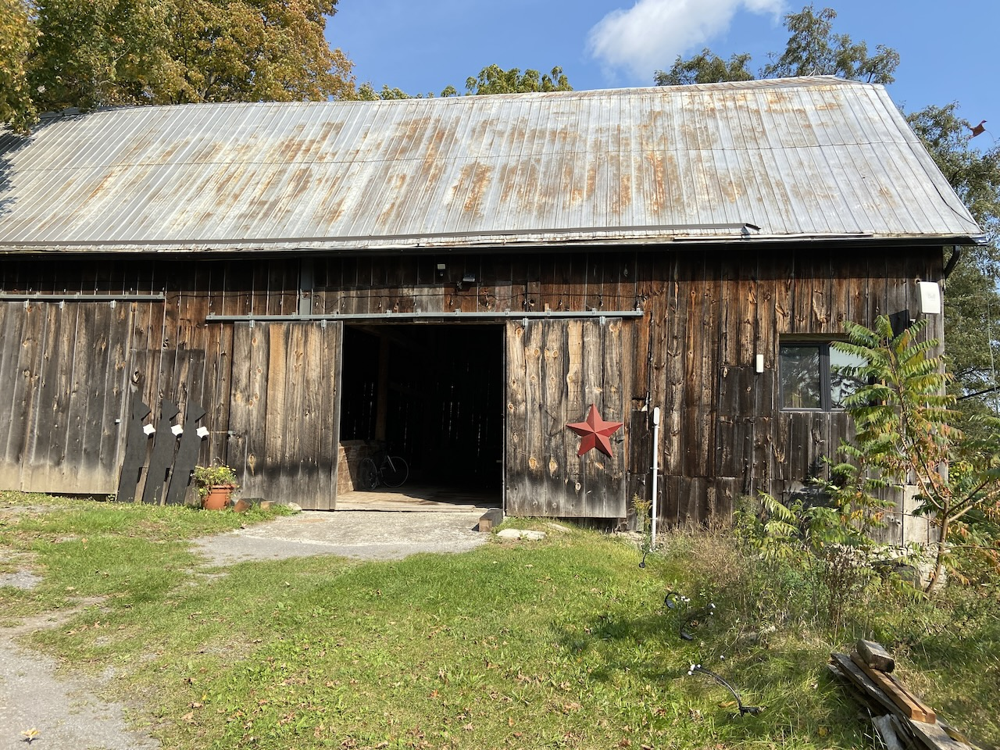
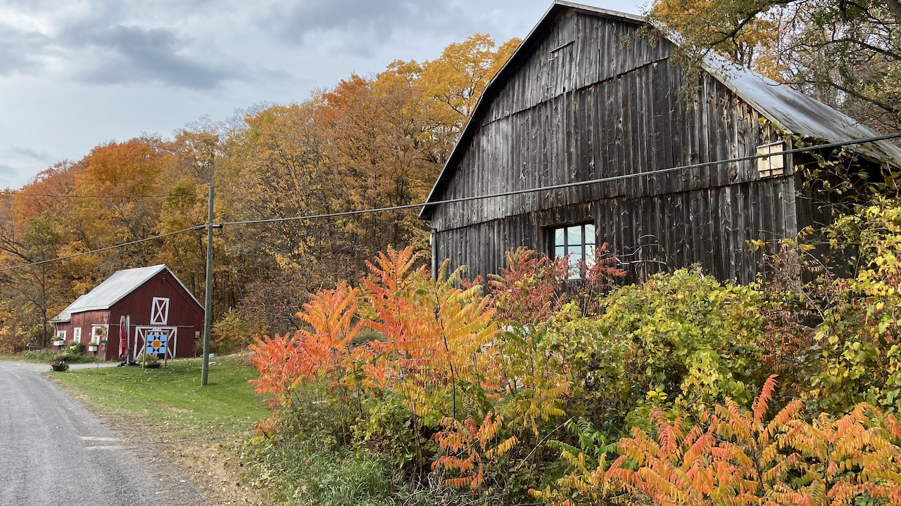
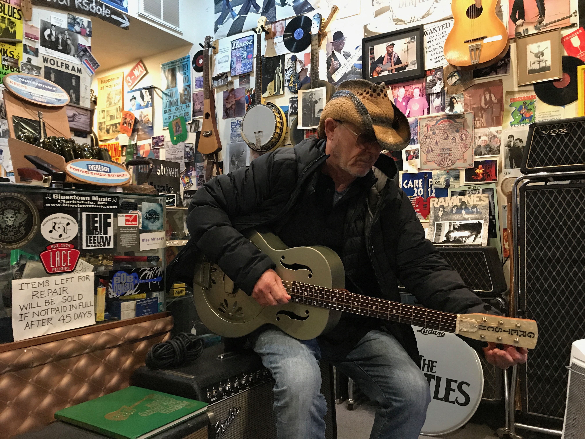
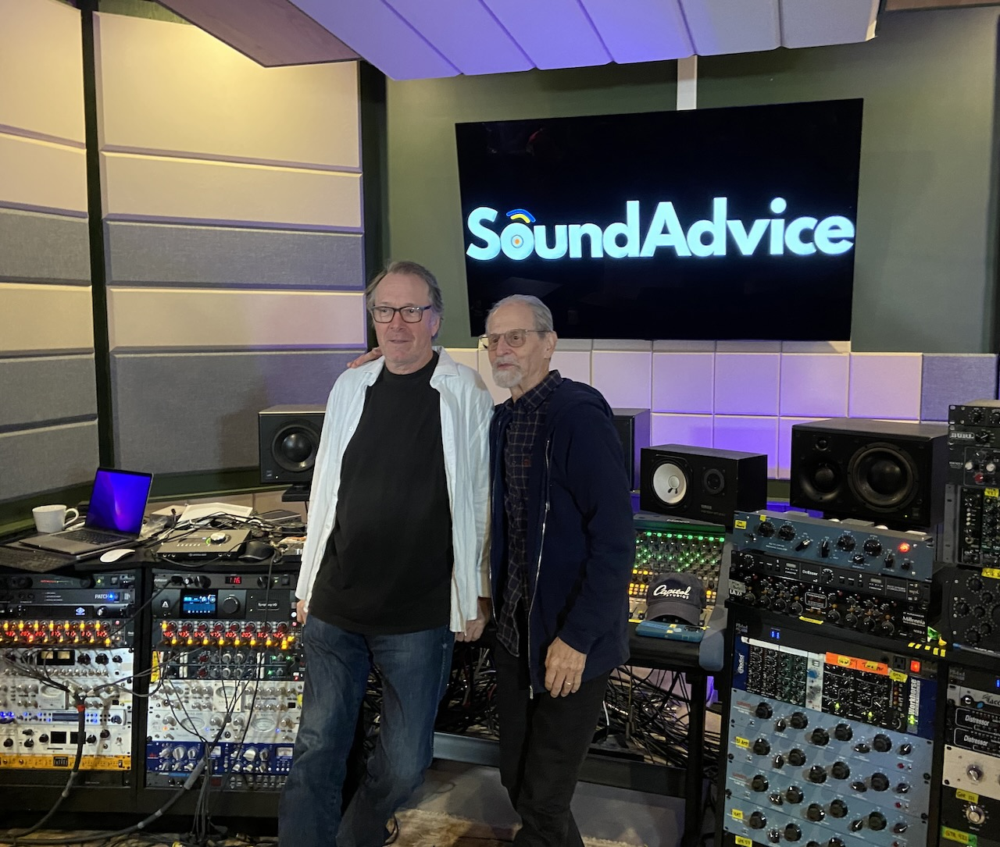
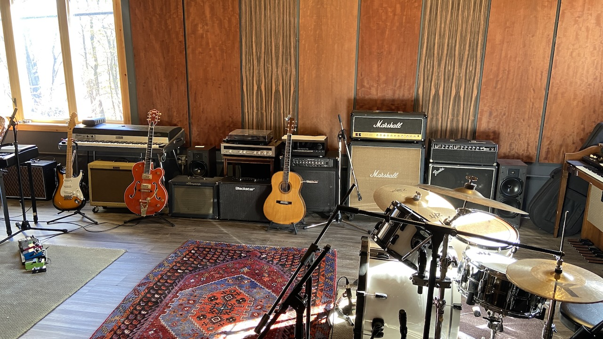
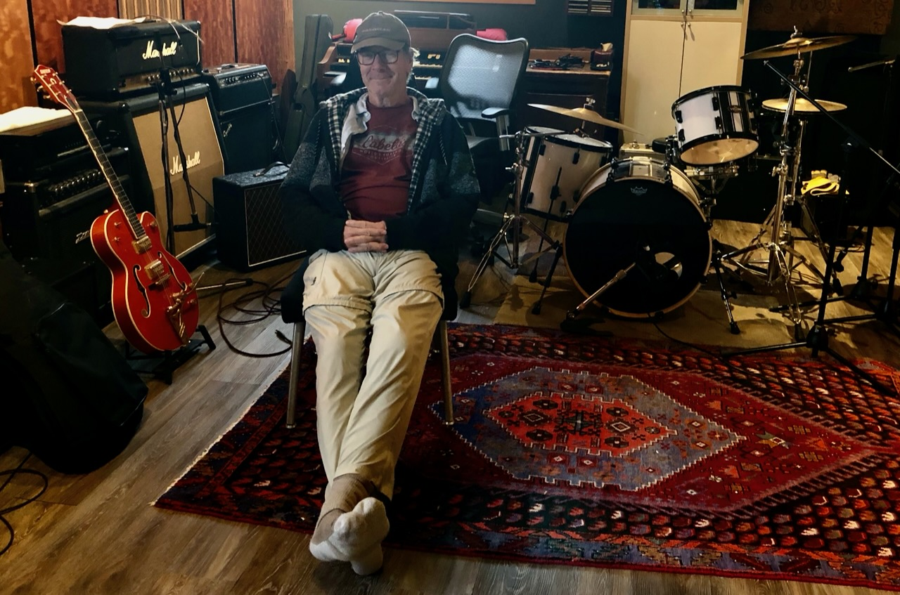
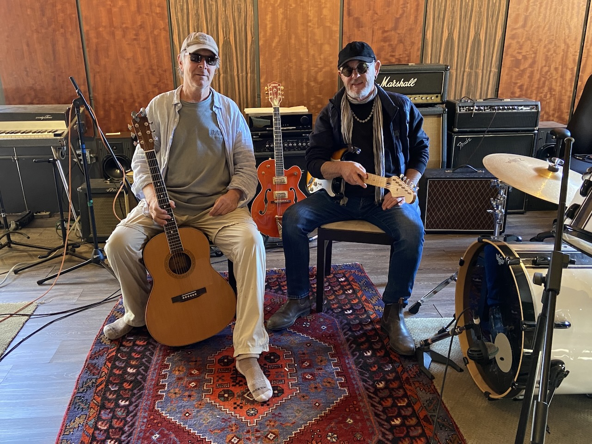
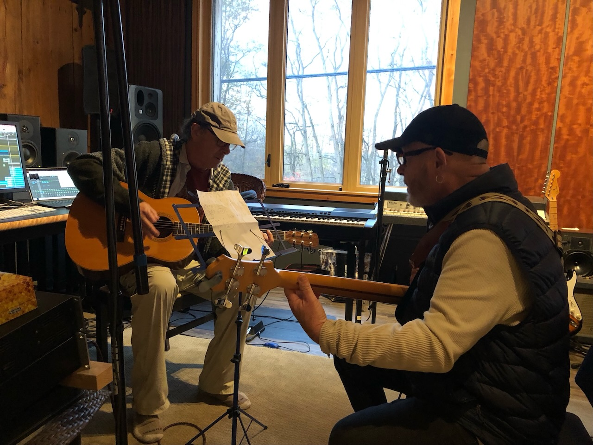